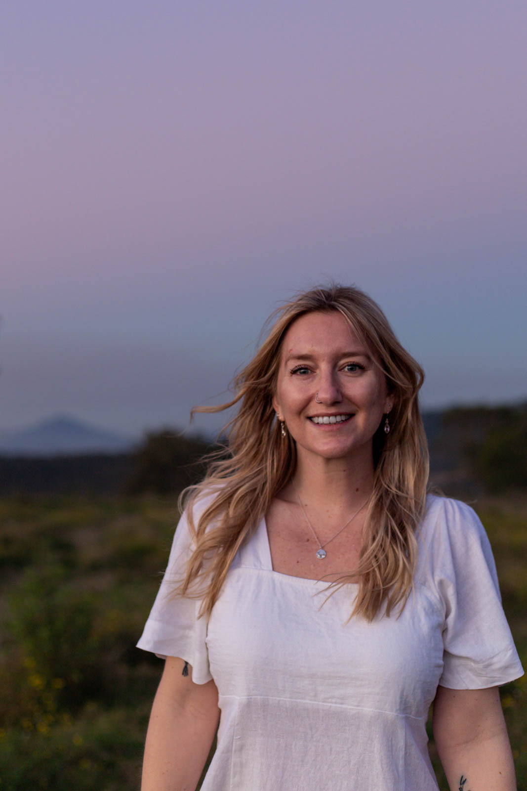

ABOUT
“The single most important component of a camera is the twelve inches behind it!” ~ Ansel Adams
Hi, I’m Katie.
I’m a Queensland-based photographer drawn to open views, changing light and watching the stars dance across the night sky.
My work follows my adventures across the Scenic Rim, South East Queensland and beyond—from Milky Way nights and mountain sunrises to the patterns only visible from above.

Hi, I’m Katie.
I’m a Queensland-based photographer drawn to open views, changing light and watching the stars dance across the night sky.
My work follows my adventures across the Scenic Rim, South East Queensland and beyond—from Milky Way nights and mountain sunrises to the patterns only visible from above.
CONTACT
Let’s create something.
For prints, collaborations or photography enquiries, or just to say hello, please send me a message.